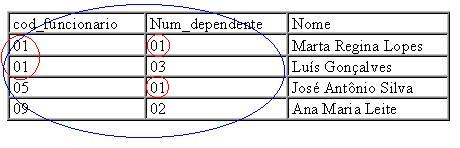
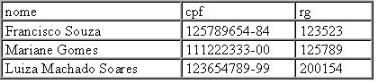

Introdução
A figura acima exemplifica o sistema de uma certa farmácia. Nesse caso, as bases de dados dos departamentos de Compra e Venda são "ilhas" isoladas de dados, ou seja, não compartilham os dados entre si. E o que isso acarreta? Acontece que, desta forma, há vários problemas, como:
- Redundância de dados, pois "Nome_Produto" e "Fornecedor" se repetem nas duas bases de dados;
- Dificuldade na manutenção dos dados: se ocorrer uma mudança no nome de um preduto na base de dados de Compra, a base de dados de Venda ainda continuará com o nome antigo até que alguém o mude;
- Falta de padronização: o nome do fornecedor, por exemplo, pode ser digitado de forma diferente em cada registro, ou seja, cada base de dados tem seu próprio padrão;
- Inconsistência dos dados: uma mesma informação se apresenta de diferentes formas nas bases de dados, isso geralmente é causado pela falta de padronização;
- Dificuldade de acesso aos dados: isso ocorre devido aos formatos diferentes nos quais os dados se apresentam.
Solução para esse problema:
No banco de dados representado na figura acima, toda informação anterior se encontra aqui contida, de forma compartilhada, assim há apenas uma ocorrência de cada informação, assim, os problemas vistos não ocorrem mais.
Para o gerenciamento desse banco de dados é adotado o uso de um SGBD (sistema gerenciador de banco de dados), o qual é uma coleção de programas que visa dar ao usuário a possibilidade de criar, manter, definir e manipular um banco de dados.
Mas afinal, o que é um banco de dados?
Banco de dados é uma coleção de dados armazenados em um computador, o qual é gerenciado por um SGBD.
Entre as vantagens que um banco de dados proporciona estão:
- Controle da redundância: o mesmo dado não aparece em vários registros;
- Controle centralizado: controle do banco de dados exercido pelo SGBD;
- Dados compartilhados;
- Independência dos dados: os dados, agora, pertencem ao banco de dados, e não mais aos programas;
- Garantia de integridade (restrição de integridade);
- Restrição a acesso não autorizado;
- Facilidade em se fazer cópias e recuperações (backup e recovery);
- Inconsistências são evitadas;
- Há uma maior privacidade/proteção dos dados;
- Há padrões em comum, o que facilita o intercâmbio e as migrações;
- Otimização do espaço de armazenamento;
- Facilidade de criação de novas aplicações.
Entretanto, em algumas situações, o uso de um banco de dados pode não ser vantajoso:
- Custos iniciais elevados em hardware, software e treinamento;
- Custos adicionais com segurança e infraestrutura;
- Aplicações simples;
- O acesso por múltiplos usuários aos dados não é necessário.
Alguns conceitos também são importantes para se entender um banco de dados:
- Campos: são espaços reservados para que seja inserido um dado. Exemplo: um campo de uma tabela;
- Chave: seqüência de um ou mais campos, usado(s) para pesquisa em uma tabela;
- Chave primária (PK): coluna ou combinação de colunas de uma tabela cujos valores distinguem uma linha
das demais, na medida em que individualiza cada registro. Logo a chave primária precisa ser única e não nula.
Um bom exemplo de chave primária seria uma coluna chamada "cpf" de uma tabela de funcionários, já que não
existem duas ou mais pessoas com um mesmo cpf. Considere agora a tabela abaixo:
Nesse caso, a coluna cod_funcionario não pode ser chave primária, uma vez que há valores que se repetem, não permitindo distinguir unicamente cada linha. Na coluna num_dependente ocorre a mesma situação, logo esta também não pode ser a chave primária. A coluna nome não é uma boa candidata à chave primária, já que existem várias pessoas com um mesmo nome. A solução nesse caso é combinar as colunas cod_funcionario e num_dependente de forma a criar uma única chave primária.
- Chave secundária: chave que pode referenciar um conjunto de registros, ou seja, ela não precisa ter um valor diferente para cada registro (como a chave primária);
- Chave de ordenação: chave usada para a ordenação dos registros de um arquivo;
- Chave de acesso: Chave usada para pesquisa em um arquivo;
- Chave estrangeira (FK): coluna ou combinação de colunas, cujos valores são obrigatoriamente chaves primárias em outras ou na própria tabela. Ela representa uma ligação (relacionamento) entre tabelas. Não há limite de quantidade para chave estrangeira.
- Chave candidata (ou alternativa): Quando duas ou mais colunas podem ser chave primária, se uma delas
for escolhida como tal, as outras serão chaves candidatas. Resumindo, chave candidata é um atributo que
poderia ser chave primária. Exemplo:
Nesse caso, há duas possibilidades para chave primária (cpf e rg). Ao se escolher o rg como a chave primária(PK) da tabela, o cpf torna-se chave candidata. Obs.: No exemplo anterior, a melhor escolha para PK é o rg, pois o cpf possui mais caracteres, o que dificulta a busca e a digitação e aumenta o espaço de armazenamento.
- Argumento de pesquisa: campo que se quer procurar, ou seja, é o valor da chave de acesso em uma pesquisa;
- Dicionário de dados: O dicionário de dados nada mais é que um banco de dados que contém informações sobre os dados da empresa, como atributos, relacionamentos, restrições, chaves, entidades etc.
- Entidade: Objeto do mundo real distinguível de outros objetos.
- Relacionamento: É uma associação (ligação) entre entidades. Pode ser classificado como:
- Binário: Associação entre duas entidades. Exemplo:
- Ternário: Associação entre duas ou mais entidades. Exemplo:

As pessoas que manipulam um banco de dados recebem denominações especiais. São elas:
- Administrador de dados (AD): É a pessoa que conhece bem a empresa e, por isso, é ele quem cria e mantém o dicionário de dados, entre outras funções;
- Administrador de banco de dados (DBA): É o especialista em SGBD que controla os dados e aplicativos que acessam o banco de dados. Também é de sua responsabilidade: elaborar o projeto físico do banco de dados, auxiliar na construção do modelo lógico, fazer manutenções, modificar a estrutura física etc;
- Projetista de banco de dados: Pessoa que entende bem de engenharia de software e é responsável por identificar os dados que serão armazenados, além de escolher a estrutura para representar e armazenar os dados, ouvir o usuário para obter suas necessidades etc.
- Usuário final: Esta classificação se divide em quatro categorias:
- Casual: Raramente acessa o banco de dados, porém pode necessitar de informações diferentes a cada vez;
- Leigos ou paramétricos: Faz acessos constantes ao banco de dados, mas utiliza consultas padronizadas testadas anteriormente;
- Sofisticados: Conhece o SGBD e o utiliza;
- Individual: Possui banco de dados pessoal e utiliza programas já prontos.
Tipos de banco de dados
- Banco de dados em rede (ou reticular)
Os dados são colocados em registros, os quais são agrupados em classes. Exemplo de banco de dados em rede: Adabas e IDMS.
- Banco de dados hierárquico
É representado por uma árvore hierárquica, onde todos os relacionamentos são do tipo 1:N.
Exemplo de banco de dados hierárquico: Arquivos e diretórios em sistemas operacionais tipo Unix.
- Banco de dados textual ou multimídia
Esse tipo de banco de dados difere dos demais na medida em que neste os dados como "texto corrido" ou "som" são tratados como qualquer outro campo chave. Desta forma, qualquer informação pode ser encontrada, até mesmo um pequeno trecho de um texto!
Exemplo de banco de dados textual ou multimídia: PostgreSQL, BrSearch, Oracle, LightBase etc.
- Banco de dados orientado a objetos
Como nas linguagens de programação orientadas a objetos, a unidade de armazenamento também é o objeto, porém aqui os objetos continuam a existir após a finalização do programa, à essa característica dá-se o nome de persistência de objetos.
O sistema é organizado como uma coleção de objetos que definem estruturas de dados e comportamento.
Uma das grandes qualidades desse tipo de banco de dados é o reuso, onde grandes programas são construídos a partir de outros pré-fabricados.
Exemplo de banco de dados orientado a objetos: Jasmine, PostgreSQL etc.
- Banco de dados relacional
Banco de dados que utiliza tabelas para representar suas relações. Cada linha da tabela é chamada de registro e cada coluna chama-se campo. O domínio é o conjunto de valores do banco de dados.
O modelo relacional representa uma tentativa de descrever um banco de dados através de conceitos matemáticos simples e conhecidos (Álgebra relacional).
Exemplo de banco de dados relacional: Oracle, PostgreSQL, MySQL etc.
Atividade de Fixação
No intuito de fixar a aprendizagem iniciada por meio deste módulo, e verificar como está sua compreensão sobre os mesmos, são sugeridos alguns exercícios de fixação para serem resolvidos. Clique no link lateral à esquerda Exercícios, pois será por meio dele iniciada uma lista de exercício sobre os conteúdos estudados até este momento.
Boa revisão sobre os mesmos!!